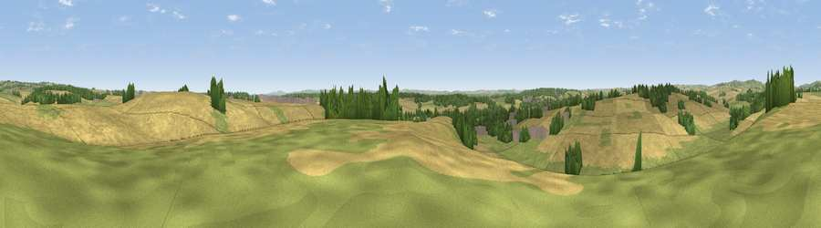

Viewpoint near Tolpuddle
#24342 in England · top 52% of its area beats it · near TolpuddleWhere it is
The exact computed spot (SY 77925 95675). Click the marker for map links.
The view, rendered

A 360° render of this exact spot computed from the terrain model, tree cover and land cover — summer colours, afternoon light, calibrated against photographs of famous viewpoints. Real trees, hedges and buildings will differ in detail.
The panorama
Grey silhouette: terrain skyline in each direction (720 bearings, Earth curvature and refraction included). Dashed green: skyline with trees (+15 m) and buildings (+8 m) as obstacles. Blue strip: how far the ground is visible on each bearing.
Where the view opens
Wedge length = distance to the farthest visible ground on that bearing (vegetation-aware). Rings at 10, 25 and 50 km.
What fills the view
63% cropland · 24% grassland · 12% woodland · 1% built-up
Angular shares of the visible panorama (visual magnitude), not map area. Landscape diversity 0.41 (0–1 Shannon).
Key numbers
More beautiful places nearby
The staircase of upgrades: each row has a higher view potential than everything closer. Driving times are estimates from straight-line distance, calibrated against real road routing — check an actual route before setting out.
| Place | Direction | Drive | Score |
|---|---|---|---|
| Viewpoint near Tincleton | SSE · 4 km | ~8 min | 51.9 |
| Henning Hill | NNW · 6 km | ~13 min | 63.6 |
| Viewpoint near Melcombe Bingham | NNW · 8 km | ~16 min | 66.8 |
| Viewpoint near Melcombe Bingham | NNW · 8 km | ~16 min | 70.5 |
| Viewpoint near Woolland | N · 10 km | ~20 min | 74.5 |
| East Hill | SSW · 13 km | ~24 min | 79.6 |
| Viewpoint near Owermoigne | S · 14 km | ~25 min | 81.0 |
| Viewpoint near Chaldon Herring | S · 14 km | ~26 min | 82.9 |
50.76024, -2.31434 · source: screening · position refined by local search. Computed location — check access rights before visiting.